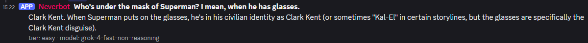

A self-hosted Discord bot that gives a server access to 1min.ai's multi-model AI subscription, through a small FastAPI proxy that holds the API key and tracks per-thread conversation context. Built as a school project for the September 2026 jury exam.
There is no self-hosted AI assistant yet, so the Discord bot talks directly to 1min.ai via a proxy. The proxy is the only thing that ever sees the 1min.ai API key; the bot only holds its own Discord token and a shared secret to authenticate to the proxy.
/askDiscord server
|
| /ask question:...
v
Discord bot (discord.py) ----HTTP + X-Proxy-Key----> FastAPI proxy ----API-KEY----> api.1min.ai
^ | ^
| | | classify difficulty (MODEL_CLASSIFIER)
+----------------- reply text <------------------- conversations.json
(interaction_id -> conversationId)
Both services run as separate Docker containers, managed by a single docker-compose.yml,
on one Proxmox LXC. The bot never holds the 1min.ai API key; the proxy never holds the Discord token.
Every question is classified by category and difficulty before being answered, and routed to a
different model per cell - see section 5. The bot passes the Discord interaction
id as the conversation key, so a fresh /ask always starts a brand-new 1min.ai conversation;
if the reply is long enough to get its own thread, that same interaction id is reused for any follow-up
messages posted in the thread, continuing the same conversation - see
section 6.
Confirmed from docs.1min.ai and the Chat with AI API page specifically:
| Item | Value |
|---|---|
| Base URL | https://api.1min.ai |
| Auth header | API-KEY: <key> |
| Create conversation | POST /api/conversations |
| Chat | POST /api/chat-with-ai |
| Reply location in response | aiRecord.aiRecordDetail.resultObject[0] |
Example create-conversation request body - type, title, and model
are all required; a request missing any of them fails with
400 REQUEST_BODY_VALIDATION_FAILED:
{
"type": "UNIFY_CHAT_WITH_AI",
"title": "some-conversation-key",
"model": "grok-4-fast-reasoning"
}
Example chat request body:
{
"type": "UNIFY_CHAT_WITH_AI",
"model": "gpt-4o-mini",
"promptObject": {
"prompt": "What are the latest developments in AI?",
"conversationId": "120qae97-d77d-468d-9d78-2e7c0b2bbb98"
}
}
model field on conversation creation isn't optional even though it's not obvious from
a quick skim of the docs - onemin_client.create_conversation() sends
MODEL_GENERAL_MEDIUM as a placeholder there, since the actual per-message model is chosen
separately for each chat-with-ai call. Sending just {"title": ...} passes the
request but 1min.ai rejects it with a 400, which the proxy re-raises as a 502 - a
confusing failure mode if you don't know to check the proxy's own request body.
?isStreaming=true, SSE) exists on the 1min.ai side but is not used in v1 -
see section 12.
discord-1min-proxy/
docker-compose.yml
.env.example
.gitignore
proxy/
Dockerfile
requirements.txt
main.py # FastAPI app, POST /v1/chat, GET /healthz
config.py # settings loaded from environment
auth.py # X-Proxy-Key dependency
onemin_client.py # httpx calls to 1min.ai
conversations.py # interaction_id -> 1min conversationId, persisted to data/conversations.json
bot/
Dockerfile
requirements.txt
bot.py # discord.py client
config.py # settings loaded from environment
POST /v1/chat is the only endpoint the bot calls.
| Field | Required | Notes |
|---|---|---|
thread_id |
Yes | Conversation key sent by the bot - the Discord interaction id of the original /ask.
A fresh /ask always sends a new interaction id (new 1min.ai conversation); follow-up
messages posted in a bot-created answer thread reuse the same interaction id the bot stored for
that thread, continuing the same conversation |
message |
Yes | The user's text |
web_search |
No | Defaults to false. When true, forwarded as 1min.ai's promptObject.settings.webSearchSettings.webSearch so the model grounds its answer with live web results. |
Response fields:
| Field | Notes |
|---|---|
reply |
The AI's answer text |
category |
code, specific, or general - which provider bucket the question was routed to |
tier |
easy, medium, or hard - the difficulty classification result |
model |
Which model identifier actually answered the question |
Request header required on every call: X-Proxy-Key: <PROXY_SHARED_SECRET> (checked by auth.py, returns 401 if missing/wrong).
Logic in main.py:
thread_id in conversations.py.POST /api/conversations (with type,
title, and a placeholder model - see section 3)
to create one and store the id.onemin_client.classify(), which sends the question to MODEL_CLASSIFIER
with a fixed prompt asking for two comma-separated words: a category
(code / specific / general) and a difficulty
(easy / medium / hard). Defaults to general /
medium if the response doesn't clearly contain one of each.MODEL_<CATEGORY>_<TIER> in the 3x3 model matrix in main.py
(e.g. category code + tier hard -> MODEL_CODE_HARD).POST /api/chat-with-ai with that model, the conversationId, and the prompt.{"reply": "...", "category": "...", "tier": "...", "model": "..."}.conversationId) and uses a cheap/fast model, and
returns both category and difficulty in one round trip - so it adds one extra lightweight request per
question rather than materially slowing things down.
resultObject) are caught in
onemin_client.py and re-raised as HTTPException(502, ...), so the bot
always gets a clean JSON error instead of a stack trace.
Uses discord.py with default intents plus the privileged Message Content Intent
(must be enabled in the Developer Portal) and an app_commands.CommandTree for slash
commands. Message content is only read inside threads the bot itself created for a long answer - it
does not read or respond to normal channel messages.
/ask question:<text> web_search:<True/False> → the bot defers the
interaction, calls the proxy, then replies in-channel (Discord shows this grouped under
"used /ask ..."). web_search is an optional boolean option (renders as a True/False
toggle in Discord's slash command UI), defaulting to off.-# subtext footer with the category, tier, and model used.thread_conversations.py persists a Discord-thread-id →
interaction-id mapping to a JSON file (own Docker volume); any non-bot message posted afterward in
that thread is picked up by an on_message listener and sent to the proxy using that same
interaction id, so it continues the same 1min.ai conversation - genuine multi-turn context, scoped to
that thread only.ALLOWED_GUILD_IDS env var restricts which servers the bot responds in.DEV_GUILD_ID syncs the slash command to one test server instantly, instead of a global sync that can take up to ~1 hour to propagate.
Copy .env.example to .env and fill in:
ONE_MIN_API_KEY=your_1min_ai_api_key PROXY_SHARED_SECRET=choose_a_long_random_string MODEL_CODE_EASY=claude-haiku-4-5-20251001 MODEL_CODE_MEDIUM=claude-sonnet-4-6 MODEL_CODE_HARD=claude-opus-4-6 MODEL_GENERAL_EASY=grok-4-fast-non-reasoning MODEL_GENERAL_MEDIUM=grok-4-fast-reasoning MODEL_GENERAL_HARD=grok-4.5 MODEL_SPECIFIC_EASY=gpt-5-mini MODEL_SPECIFIC_MEDIUM=gpt-5.4-mini MODEL_SPECIFIC_HARD=gpt-5.2 MODEL_CLASSIFIER=gpt-4o-mini DISCORD_BOT_TOKEN=your_discord_bot_token ALLOWED_GUILD_IDS= DEV_GUILD_ID=
code (programming/IT) goes to Anthropic, specific
(factual/knowledge questions) goes to OpenAI, and general (casual/creative) goes to xAI,
since Grok reads more conversational and users tend to want fast answers over long "thinking" delays for
chit-chat. Tier then picks how much reasoning to spend within that provider. Deliberately avoids each
provider's priciest flagship to keep 1min.ai credit usage down - see MODELS.md at the repo
root for the full reasoning and the complete list of every model identifier the API accepts, parsed from
docs.1min.ai's Chat with AI API page
(which 1min.ai updates as new models release - worth re-checking periodically).
.env file - it holds both the 1min.ai key and the Discord token.
.gitignore already excludes it.
Both containers run via Docker Compose inside a single Debian LXC - no need for two LXCs at this scale.
pct set <vmid> --features nesting=1,keyctl=1apt update apt install -y ca-certificates curl gnupg git # Docker's official repo + engine install -m 0755 -d /etc/apt/keyrings curl -fsSL https://download.docker.com/linux/debian/gpg -o /etc/apt/keyrings/docker.asc chmod a+r /etc/apt/keyrings/docker.asc echo \ "deb [arch=$(dpkg --print-architecture) signed-by=/etc/apt/keyrings/docker.asc] \ https://download.docker.com/linux/debian $(. /etc/os-release && echo "$VERSION_CODENAME") stable" \ > /etc/apt/sources.list.d/docker.list apt update apt install -y docker-ce docker-ce-cli containerd.io docker-compose-plugin
git clone <this repo> /opt/discord-1min-proxy cd /opt/discord-1min-proxy cp .env.example .env nano .env # fill in real values docker compose up -d --build docker compose logs -f
docker compose up --build - both containers start without errors.curl -X POST http://localhost:8000/v1/chat \
-H "X-Proxy-Key: $PROXY_SHARED_SECRET" \
-H "Content-Type: application/json" \
-d '{"thread_id":"test1","message":"Say hi in 5 words"}'
returns a JSON reply from 1min.ai.
X-Proxy-Key returns 401./ask question:... → the bot replies in-channel with the question, answer, and footer in one message./ask question:... web_search:True with a question about something recent (e.g. "what happened in the news today?") → confirm the answer reflects current info rather than a knowledge cutoff.docker compose logs bot for connection errors.ALLOWED_GUILD_IDS is set, confirm the server's id is in the list.NotFound: 404 Unknown interaction on interaction.response.defer()defer() call reached Discord. If it happens on every single attempt, suspect host clock drift (timedatectl status, confirm System clock synchronized: yes) or slow/broken outbound DNS/TLS from the container to discord.com.print() diagnostics added to the bot don't show up in docker compose logs, that's Python's stdout buffering in non-TTY containers, not a sign the code didn't run - set ENV PYTHONUNBUFFERED=1 in the bot's Dockerfile (already set in this repo).PROXY_SHARED_SECRET matches exactly between bot and proxy environments.ONE_MIN_API_KEY is valid and the subscription is active.docker compose logs proxy for the underlying 1min.ai error message.400 REQUEST_BODY_VALIDATION_FAILED from
/api/conversations, the create-conversation call is missing a required field - see the
warning in section 3.nesting=1 and keyctl=1 are set on the LXC (pct config <vmid>)./ask option, for cases where the auto-classification guesses wrong.